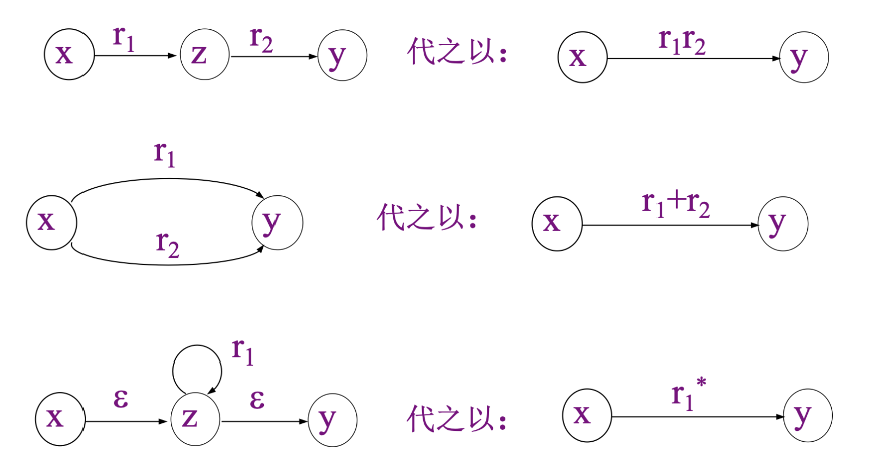
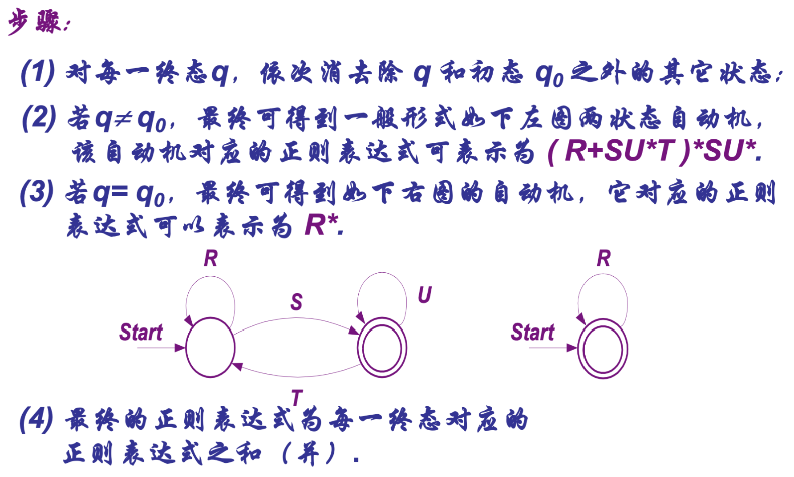
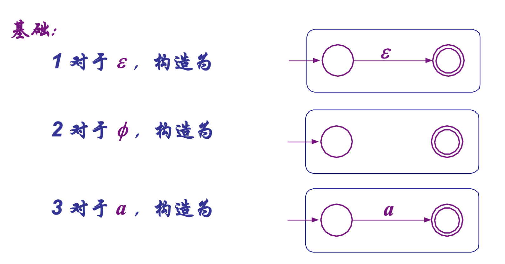
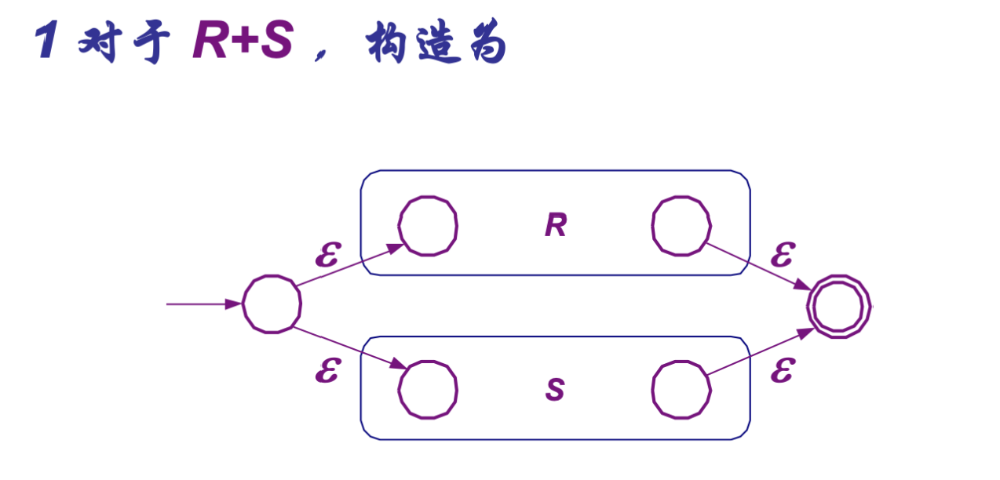
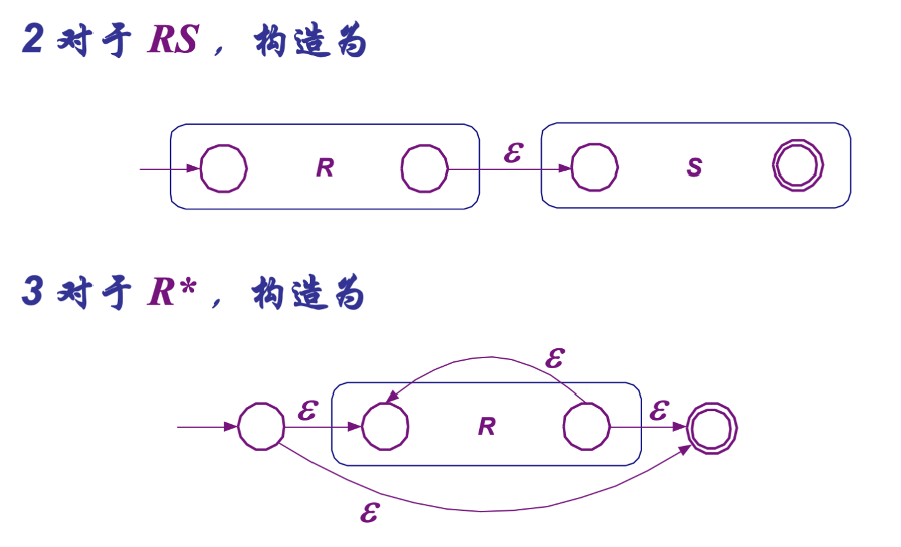
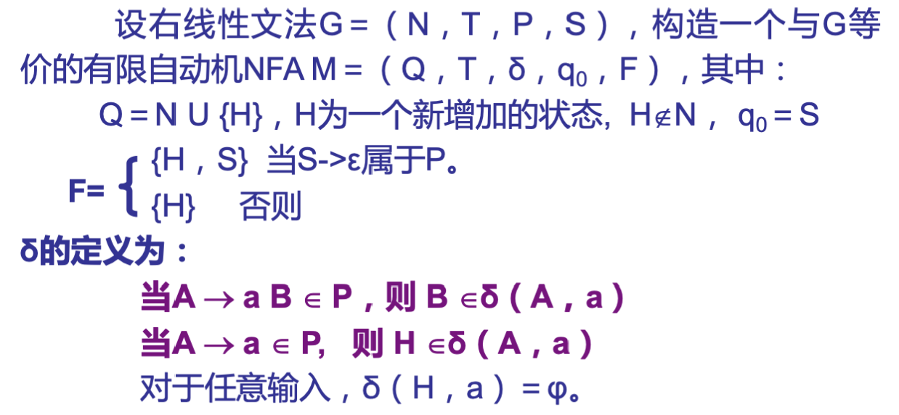
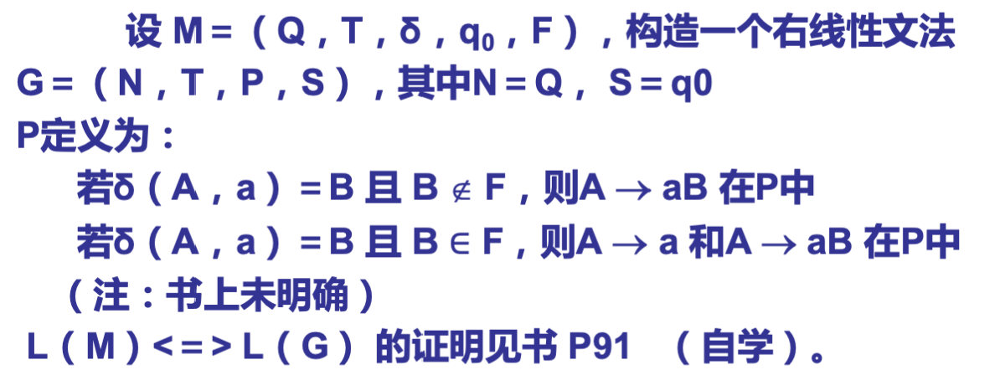

正则集和正则式
- 正则集：字母表上一些特殊形式的字符串的集合，是正则式说表示的集合；
- 正则式：用类似代数表达式的方式表示正则语言；
- 运算：（按照运算优先级从高到低排序）
- \(*\)(closure)闭包；
- \(\cdot\) (concatenation)连接；
- \(+\) (union)联合
注：
* 正则式相等等价于正则集相等；
* 一个正则式对应一个正则集，但一个正则集可能有多个正确的正则式；
右线性文法与正则式
右限性文法又称正则文法。右线性文法和正则式都可以用代表正则语言；
从右线性文法导出正则式
设\(x \rightarrow \alpha x + \beta(\Leftrightarrow x \rightarrow \alpha x 和x\rightarrow \beta)\)，其中\(\alpha \in T^*,\beta \in (N + T)^*,x\in N\)，则：\(x\)的解为\(x = \alpha^*\beta\)；
正则集与右线性文法
- 正则集是由右线性文法产生的语言；
- 右线性文法产生的语言都是正则集；
- 一个语言是正则集，当且仅当该语言问右线性语言；
正则式与有限自动机
从DFA构造等价的正则表达式
状态消去法

具体步骤：

从正则式构造等价的\(\epsilon\)-NFA
归纳构造法



右线性语言与有限自动机
定理：由任意右线性文法定义G定义的语言必然能被一个NFAM所接受，即\(L(G) = L(M)\)；
构造与右线性文法等价的NFA

省流：
1. 新增一个状态作为终止状态；
2. 对仍在扩展非终结符的生成式，则转移到对应状态；
3. 对到达终结符的生成式，则转移到新增的结束状态；
4. 结束状态不存在转移；
构造能接受NFAM定义的语言的有限性文法

DFA的极小化
填表法；
Pumping定理
判定正则语言的必要条件；
定理：设\(L\)是正则集，存在常数\(n\)，对字符串\(\omega \in L\)且\(\left | \omega \right | > n\)，则\(\omega\)可以写成\(\omega_1\omega_o\omega_2\)，其中\(\left | \omega_1 \omega_0\right | \le
n\)，\(\left | \omega_0\right | >
0\)，对所有的\(i \ge
0\)，有\(\omega_1\omega_0^i\omega_2 \in
L\)；
显然，该定理可以用来证明某个语言不是正则语言；
证明步骤：
1. 对于足够大的n；
2. 找到一个满足以下条件的串\(\omega \in
L\)（串长至少为n）；
3. 任选满足\(\omega =
\omega_1\omega_o\omega_2\)，其中\(\left
| \omega_1 \omega_0\right | \le n\)，\(\left | \omega_0\right | > 0\)；
4. 找到一个\(i\)，使得\(\omega_1\omega_0^i\omega_2 \notin L\)；